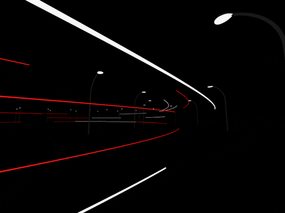

Intelligence at the Edge of Chaos: Beyond the Mechanical Mind
Imagine capturing a hurricane in a jar. That's our AI folly—reducing cognition to a glorified Erector Set. We're building elaborate mousetraps while true intelligence slips through our fingers. It's time to smash our epistemological camera and rebuild from scratch.
"The map is not the territory."


Reframing Intelligence in the Age of Artificial Intelligence
Imagine trying to capture a hurricane in a jar. That's the fundamental absurdity plaguing our pursuit of artificial intelligence. We're guilty of a colossal epistemological blunder, reducing the vast, swirling complexity of cognition to a glorified Erector Set. This mechanistic delusion—that intelligence is just a collection of nuts-and-bolts capabilities we can assemble like some cosmic IKEA furniture—isn't just misguided. It's intellectual myopia of the highest order, blinding us to the true nature of the mind's intricate dance.
AIArtificial IntelligenceIn the Lexicon →Make no mistake: this isn't merely academic navel-gazing. Our flawed framework is the invisible straightjacket constraining AI development, leading us down rabbit holes of increasing sophistication but diminishing returns. We're building ever-more elaborate mousetraps while the very essence of intelligence slips through our fingers like quicksilver.
OptimizationImproving efficiency by eliminating redundancy and bufferIn the Lexicon →The stakes couldn't be higher. As we chase the chimera of artificial general intelligence with our current toolbox, we risk creating not a mind, but a funhouse mirror reflection of our own limited understanding—a hall of algorithmic echoes impressive in their mimicry but utterly devoid of the spark that defines true cognition.
TechnologyThe applied tools, systems, and infrastructure through which scientific knowledge is put to practical use.In the Lexicon →This mechanistic approach to AI, while yielding impressive results in narrow domains, ultimately amounts to a Sisyphean endeavor in pursuit of general intelligence. It's akin to attempting to fathom the vastness of the cosmos by meticulously cataloging grains of sand—you might uncover fascinating details about silica composition, but you'll remain blind to the gravitational dance of galaxies, the birth and death of stars, and the very fabric of spacetime that gives the universe its form.
The story of AI research feels like watching the same movie over and over. Each new wave of researchers bursts onto the scene, brimming with optimism, only to trip over the same stumbling blocks that felled their predecessors. From the rigid rule-based systems of the 1980s to today's massive language models, we've watched this cycle repeat itself. Bright-eyed teams charge forward, convinced they've cracked the code, only to slam into the same walls that have stymied progress for decades. Time and again, we mistake a machine's ability to do one thing well for true intelligence.
SiliconSemiconductor material used in computer chip manufacturingIn the Lexicon →We've become so enamored with our silicon savants that we mistake their parlor tricks for genuine comprehension. It's like watching a master illusionist and concluding they actually bent the laws of physics—an impressive act, sure—but hardly an understanding of reality.
IBMInternational Business MachinesIn the Lexicon →This isn't just a case of rose-tinted spectacles clouding our technological vision; it's a chronic epistemological astigmatism that distorts our very conception of intelligence. Each new computational wunderkind—whether it's IBM's chess virtuoso Deep Blue or DeepMind's Go guru AlphaGo—sparks a veritable Cambrian explosion of anthropomorphic projections and hubristic prophecies. We're like overzealous parents at a school play, convinced that little Timmy's wooden recitation of "To be or not to be" heralds the arrival of the next Laurence Olivier.
The inevitable "AI winters" that follow aren't mere funding droughts or waning public interest; they're existential hangovers, forcing us to confront the yawning chasm between our Icarian ambitions and the leaden reality of our creations. This whiplash-inducing cycle of hype and disillusionment isn't just a PR hiccup or a quirk of Silicon Valley's hype machine. No, it's the symptomatic fever of a deeper intellectual malaise—a category error so fundamental it threatens to unravel our entire conceptual framework for intelligence and cognition.
Our dogged determination to dissect intelligence into a neat catalogue of discrete, scalable capabilities isn't just myopic—it's a conceptual straitjacket that threatens to asphyxiate genuine progress. Consider the deceptively simple act of recognizing a friend in a sea of faces. The standard AI playbook would have you believe it's a tidy, algorithmic waltz: first, the sharp-eyed edge detector does its dance, then the pattern matcher takes a twirl, before the memory module makes its grand entrance for the finale. It's a charming performance, to be sure, but one that bears about as much resemblance to actual cognition as a marionette show does to human theater.
But, aye! Here's the rub: this tidy, mechanistic view might be completely missing the mark. It's seductively simple, sure, but it could be fundamentally misrepresenting how intelligence actually works. We've fallen into a trap of our own making, constructing AI systems that mirror this fragmented understanding—better vision algorithms here, more accurate pattern matchers there, topped off with turbocharged memory models.
This reductionist view of intelligence has practical consequences. It leads us to create AI systems that excel at specific tasks but fail spectacularly when faced with novel situations or contextual nuances that humans navigate effortlessly. The brittleness of these systems—their tendency to break down in unexpected ways when confronted with scenarios outside their training data—isn't just a technical limitation. It's a clue that our fundamental approach might be flawed.
ConsciousnessSubjective experience of awarenessIn the Lexicon →Consider the phenomenon of adversarial examples in machine learning. Tiny, imperceptible changes to an image can cause a state-of-the-art image recognition system to confidently misclassify it—seeing a gibbon where humans clearly see a panda, for instance. These vulnerabilities aren't mere glitches; they're windows into the vast gulf between how our AI systems process information and how biological intelligence operates. They suggest that our artificial neural networks, despite their biological inspiration, might be missing crucial aspects of how real brains work.
To grasp the depth of this potential misconception, we must look beyond our conventional understanding and explore perspectives that challenge our ingrained assumptions about cognition.
As Melanie Mitchell, Professor of Complexity at the Santa Fe Institute, might argue in this context,
"The biggest obstacle to developing artificial intelligence might be our own preconceptions about what intelligence is."
This observation cuts to the heart of our challenge—it suggests our entire conceptual framework for creating AI might be fundamentally flawed.
The evidence for this emerges from unexpected places. When researchers connect different specialized AI systems, they sometimes observe what complexity theorists call "capability gradients"—zones where different optimization patterns interact to create unexpected behaviors. These aren't mere combinations of existing capabilities; they represent the emergence of entirely new properties that cannot be reduced to or predicted from the components' individual characteristics.
This phenomenon challenges everything we think we know about intelligence development. Douglas Hofstadter articulates this shift:
"We're discovering that intelligence isn't something you build piece by piece like a machine. It's more like an ecosystem, where complex behaviors emerge from relatively simple interactions."
This isn't merely a clever metaphor to spice up academic discourse; it's a seismic shift in our intellectual tectonics, forcing a wholesale reimagining of how intelligence manifests within the Byzantine labyrinths of interconnected systems. We're not just changing the lens through which we view intelligence; we're smashing the entire epistemological camera and building a new one from scratch.

The transition from a mechanistic to an ecological conception of intelligence isn't a mere perspectival pivot—it's a radical reimagining of the very genesis and modus operandi of cognition. This paradigmatic upheaval suggests that our current modus operandi—the relentless pursuit of ever-more-gargantuan neural networks and the voracious accumulation of data—may be as misguided as trying to understand the biosphere by building an ever-larger terrarium.
The key to unlocking true artificial intelligence might not lie in constructing more elaborate silicon brains, but in cultivating rich, dynamic crucibles where intelligence can emerge organically through a complex dance of interaction and adaptation. This aligns with the bleeding edge of research in multi-agent systems and evolutionary algorithms, where we're witnessing the birth of complex, seemingly intelligent behaviors from the chaotic interplay of deceptively simple agents. It's less about building a better brain, and more about creating a fertile primordial soup from which cognition can spontaneously arise.
But in embracing this view, we're not so much opening Pandora's box as we are detonating it, unleashing a maelstrom of thorny questions that threaten to upend the very foundations of AI research:
- How do we quantify progress when intelligence is an emergent property, as elusive and mercurial as consciousness itself, rather than a checklist of capabilities we can tick off? Our current benchmarks and metrics suddenly seem as quaint and inadequate as using a sundial to time a quantum leap.
- If these complex systems give birth to behaviors we can neither predict nor fully control, how do we ensure they remain aligned with human values and don't veer into the realm of existential threat? We're potentially midwifing entities that could outsmart their creators from the moment of inception.
- How do we reconcile the inherent opacity of emergent systems with our desperate need for interpretability and explainability? We may be faced with the AI equivalent of trying to explain the intricacies of human consciousness by dissecting individual neurons.
These aren't mere technical speed bumps—they're philosophical sinkholes threatening to swallow whole our ethical frameworks for AI development. We may need to forge entirely new conceptual tools, a new language of thought itself, to even begin grappling with intelligence as an emergent phenomenon.
The mathematical patterns underlying these emergent interactions aren't just interesting quirks - they may reveal fundamental truths about the nature of intelligence itself. We're potentially uncovering universal principles that govern how complex, adaptive cognition arises from simpler components, whether in biological brains or artificial systems.
This perspective invites us to ask: What if intelligence isn't something that can be engineered piece by piece, but rather a phenomenon that must be cultivated, like an ecosystem? And if that's the case, how does it change our approach to creating artificial minds?
James Crutchfield from UC Davis observes that these emergence patterns "follow mathematical principles we're only beginning to understand. It's not chaos, but it's not simple order either—it's something in between that seems fundamental to intelligence." This intermediary zone, what complexity theorists call the "edge of chaos," might be where intelligence actually resides.
Consider the implications of this framework: Intelligence might not be a property of individual components or even their intended interactions, but rather a phenomenon that emerges from the complex dynamics of system-wide behavior. When we observe unexpected capabilities emerging from the interaction of specialized AI systems, we're not witnessing simple combination effects—we're seeing the manifestation of higher-order patterns that transcend their constituent parts.
These emergence patterns follow mathematical principles that challenge our conventional understanding of system development. Traditional computational frameworks assume that system capabilities can be decomposed into discrete, analyzable components. But emergence suggests something far more intriguing: properties that can only be understood at the level of whole-system dynamics. This isn't merely a technical observation—it represents a fundamental challenge to our reductionist approaches to understanding intelligence.
Consider the implications: If intelligence emerges from the complex interaction of simpler components rather than from the assembly of specialized capabilities, we've been approaching AI development backward. It's basically trying to understand consciousness by studying individual neurons in isolation—you'll miss the most interesting and important aspects of the phenomenon.
This epiphany doesn't just suggest a course correction in AI development; it demands a complete paradigm shift, a Copernican revolution in our approach to artificial intelligence. As Stuart Russell, the éminence grise of computer science at UC Berkeley, puts it with characteristic bluntness:
"We need to separate genuine scientific questions about intelligence from inflated claims about current AI systems."
This separation reveals patterns that challenge both the techno-utopian and skeptical narratives dominating current discourse.
The patterns manifest across multiple scales of analysis, creating what mathematicians call "hierarchical emergence"—where properties at each level arise from, but cannot be reduced to, the dynamics of the level below. At the micro level, we observe specialized optimization patterns, the traditional focus of AI development. But these patterns aren't merely computational processes—they represent the fundamental building blocks of emergent complexity.
At the meso level, something far more fascinating occurs. We witness what complexity theorists term "coherent irregularity"—patterns that maintain stability while constantly adapting and evolving. These aren't simple aggregations of lower-level properties but qualitatively new phenomena that emerge from their interactions. The integration effects we observe here challenge our basic assumptions about causality and system behavior.
The macro level reveals perhaps the most profound implications. Here we see ecosystem-wide adaptation patterns that suggest intelligence might be more accurately understood as a property of complex interactive systems than of individual components or capabilities. These patterns exhibit what theoretical biologists call "downward causation"—where higher-level properties constrain and shape the behavior of lower-level components in ways that maintain system-wide coherence.
This multi-scale perspective reveals something crucial: our current approaches to AI development might be fundamentally misguided. Traditional methods focus on optimizing individual components—making better vision systems, more accurate language models, more efficient planning algorithms. But as Yoshua Bengio, pioneer in deep learning, suggests, "Instead of building bigger specialized models, we might need to focus on creating environments where intelligence can emerge through interaction."
The implications extend beyond technical considerations. Alex Hanna, Ph.D., Director of Research at the Distributed AI Research Institute, argues that "Understanding AI requires understanding power structures." This isn't just about technical capabilities—it's about who benefits from certain interpretations of those capabilities, what narratives are being promoted, and why.
The fascinating tension here lies not in choosing between technical optimism and social criticism, but in recognizing how they inform each other. The same emergence patterns that challenge our technical understanding of AI also challenge our social narratives about it. This suggests something profound: our misunderstandings about intelligence might be embedded not just in our technical approaches, but in our institutional and economic structures as well.
The path forward requires new mathematical frameworks capable of capturing these emergence patterns. We need tools that can describe how properties manifest differently at different scales, how information flows through complex systems, and what conditions facilitate the emergence of novel capabilities. This isn't merely a technical hurdle to be overcome with cleverer algorithms or more powerful hardware. It's a conceptual Everest that demands we develop entirely new modalities of thought about intelligence itself. We're not just pushing the boundaries of computer science; we're redrawing the map of cognition.
Our comprehension of AI must transcend the straitjacket of mechanistic thinking, embracing instead the fluid, emergent nature of genuine intelligence. This isn't just an academic reshuffling of deck chairs; it's a paradigm shift with seismic implications for how we conceptualize and discuss AI in both the ivory towers of academia and the public agora. It challenges us to reconceive intelligence not as some fixed, quantifiable property—a cognitive IQ score writ large—but as a dynamic, ever-evolving process emerging from a tapestry of complex interactions. We're not just moving the goalposts; it’s one of those old black and white re-runs where the two dum dums realize they’re playing the wrong sport entirely. Cue the trombone.
"The way we talk about AI has become disconnected from reality."
This stark observation from Emily M. Bender, a prominent computational linguist, cuts to the heart of our current predicament. Bender highlights a crucial disconnect between our narratives about AI and its actual capabilities and limitations. Her insight serves as a sobering reality check, forcing us to confront the gap between our inflated expectations and the current state of the technology.
The disconnection serves multiple masters—both the tech companies pushing AI products and the researchers trying to understand fundamental principles. Breaking free from these constraints requires uncommon intellectual courage—the willingness to question not just individual assumptions but entire frameworks of understanding.
The question that should keep us awake isn't whether machines can think, but whether our thinking about machine intelligence has been constrained by assumptions we didn't even know we were making. The answer might reshape not just AI development, but our understanding of intelligence itself.
As Mitchell concludes, "We need to be able to hold two thoughts simultaneously: that current AI systems are neither magical thinking machines nor mere statistical pattern matchers, but complex systems that might reveal something profound about the nature of intelligence itself—if we can look past both the hype and the cynicism to see the actual patterns emerging."
The path forward requires us to embrace this complexity while maintaining rigorous analytical frameworks. We must be willing to question our most basic assumptions about intelligence while developing new mathematical and conceptual tools to understand the patterns of emergence that might define it. The challenge isn't just technical or conceptual—it's about developing new ways of seeing that allow us to recognize patterns we've been blind to all along.
Are we ready to confront that possibility? The future of AI—and our understanding of intelligence itself—may depend on our answer.
Courtesy of your friendly neighborhood,
🌶️ Khayyam


Knowware — The Third Pillar of Innovation
Systems of Intelligence for the 21st Centurty